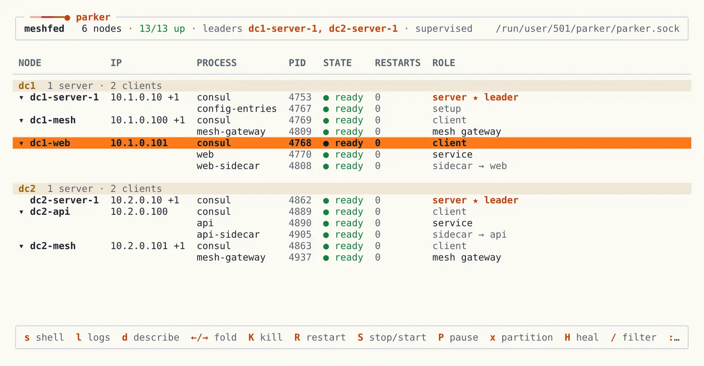
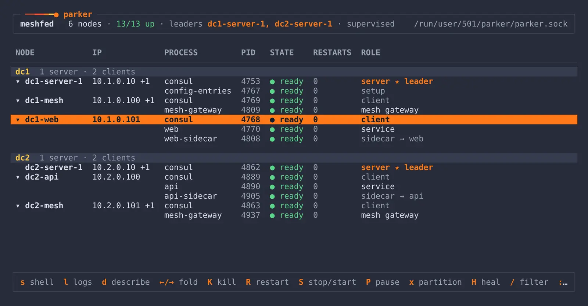

Before you start
Parker needs a Linux machine, amd64 or arm64: a laptop, a server, or a VM. It doesn't need Docker or Kubernetes, and it downloads the Consul and Envoy versions each lab asks for, so you don't install those either.
- On a Mac? Run Parker in a Linux VM (Lima, UTM, OrbStack and Multipass all work), then drive it from macOS with the Mac build of Parker. See remote use.
- No root? No problem. Run Parker as yourself and it keeps labs in a private sandbox. Use
sudo parkerwhen you want to reach lab nodes directly from the host.
1Install
Parker is one static binary. The install script finds the latest release for your machine, checks its checksum and puts parker in /usr/local/bin:
$ curl -fsSL https://ranjandas.github.io/parker/install.sh | shRather see every step? Download the release yourself (use ARCH=arm64 on ARM machines):
$ V=0.10.0 ARCH=amd64 $ curl -LO https://github.com/Ranjandas/parker/releases/download/v$V/parker_${V}_linux_$ARCH.tar.gz $ curl -LO https://github.com/Ranjandas/parker/releases/download/v$V/SHA256SUMS $ sha256sum --ignore-missing -c SHA256SUMS $ tar xzf parker_${V}_linux_$ARCH.tar.gz && sudo install -m 0755 parker /usr/local/bin/parker $ parker version
2Your first lab
A lab is a YAML file that says what you want. parker init writes a starter: one datacenter with three Consul servers.
parker: v1alpha1 name: lab versions: { consul: 1.22.7 } consul: datacenters: dc1: servers: 3
Bring it up. The first run downloads Consul; after that it's a few seconds.
$ parker init lab.yaml $ parker up lab.yaml network: 1 networks, 3 nodes started dc1-server-1/consul pid 43324 ... ready dc1-server-1/consul 5.5s lab "lab" is up in 5.6s
Tip: the first line of the file parker init writes points your editor at Parker's schema, so VS Code, Neovim and Helix give you autocomplete and inline docs as you type.
3Look around
Run any command on a node with parker exec. Nodes are named by datacenter and role, so dc1/server-2 or even dc1/leader just work.
$ parker exec lab dc1/leader -- consul operator raft list-peers $ parker exec lab dc1/server-2 # a shell on that node
For a live view, open the terminal UI or the web UI:
$ parker tui lab # live table, shells and logs on a key $ parker ui lab # dashboard, topology and Consul UI in your browser


parker tui: press s for a shell, l for logs, K to kill.In the web UI, every server has an Open link to its Consul UI, so you never have to look up an IP or port.
4Add services
Labs get interesting with services in them. Parker comes with a built-in demo app, fake-service, that answers with who it is and calls whatever it's told to. Add two to the file, in the mesh:
parker: v1alpha1 name: lab versions: { consul: 1.22.7, envoy: 1.35.12 } consul: datacenters: dc1: servers: 3 service_defaults: { run: fake-service, connect: sidecar } nodes: web: service: { port: 8080, upstreams: { api: 9091 } } api: service: { port: 9090 }
Run parker up again. It replaces the old lab with the new one. Then send a request through the chain and see every hop:
$ parker up lab.yaml $ parker call lab dc1/web web dc1-web · dc1 200 23ms └─ api dc1-api · dc1 200 4ms


5Break something
Most bugs show up when something goes wrong. Parker can make things go wrong for you, and put them right again:
$ parker fault lab partition dc1/leader # cut the leader off from the rest $ parker fault lab heal # reconnect everything $ parker fault lab kill dc1/leader # and watch a new one get elected $ parker fake lab dc1/api --error-rate 0.3 # make api fail 30% of requests
The same actions are buttons in the web UI and keys in the terminal UI. parker status lab shows what's stopped, paused or cut off.
6Script the repro
Once you know the steps that trigger a problem, write them down as a scenario at the bottom of the file. Anyone can then replay your repro with one command, and it tells them which step failed.
scenario: steps: - wait: dc1 ready - name: cut the leader off partition: [dc1/leader] - assert: { consul: { leader: true }, within: 30s } - heal: all - snapshot: logs
$ parker run lab.yamlShare the file in a bug report and the person on the other end has your exact setup, versions and all.
7Clean up
One command removes everything the lab created. It's safe to run twice, and works even if something crashed.
$ parker down lab $ parker prune # remove leftovers of labs that aren't running